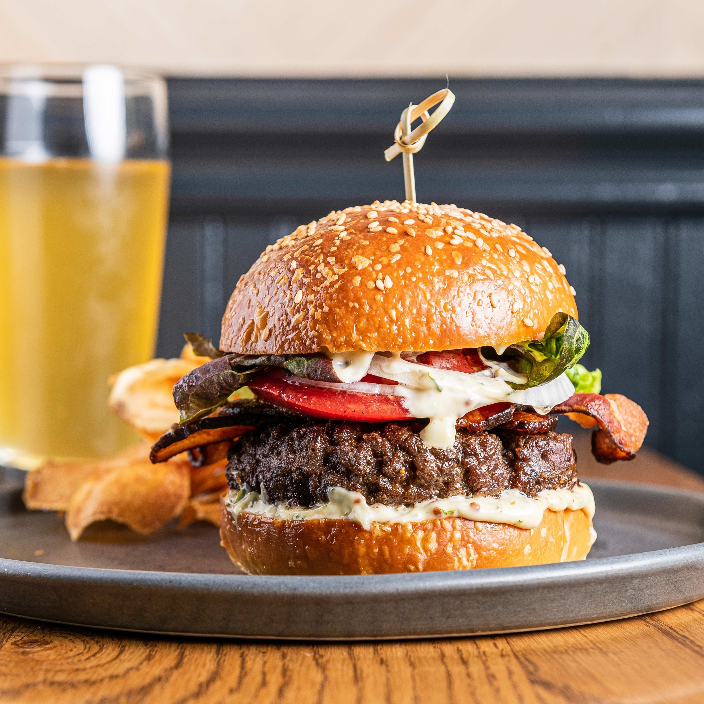

Burger Recipe

Description
This hamburger patty recipe uses ground beef and an easy bread crumb mixture.
Nothing beats a simple hamburger on a warm summer evening!
Enjoy on ciabatta, Kaiser, or potato rolls topped with your favorite condiments.
Ingredients
Beef patty
- 1 large egg
- 1/2 teespoon of salt
- 1/2 teespoon of black pepper
- 1 pound ground beef
- 1/2 cup fine dryed bread crumbs
Burger sauce
- Mayo
- Ketchup
- Mustard
- Garlic powder
Other
- Buns
- Tomatos
- Lettuce
- Cheddar cheese
- Pickles
Preparation steps
Steps to make beef patties
- Preheat an outdoor grill for high heat and lightly oil grate.
- Whisk egg, salt, and pepper together in a medium bowl.
- Add ground beef and bread crumbs; mix with your hands or a fork until well blended.
- Form into four 3/4-inch-thick patties.
- Place patties on the preheated grill. Cover and cook 6 to 8 minutes per side, or to desired doneness. An instant-read thermometer inserted into the center should read at least 160 degrees F (70 degrees C).
Steps to make the burger sauce
- Put one tablespoon of mayo, ketchup with 1 teespoon of mustard + 1/2 teespoon of garlic powder in a small bow
- Mix well
- Tadaa now you have made a simple, but amazing sauce
Put the burger together and enjoy!
Home